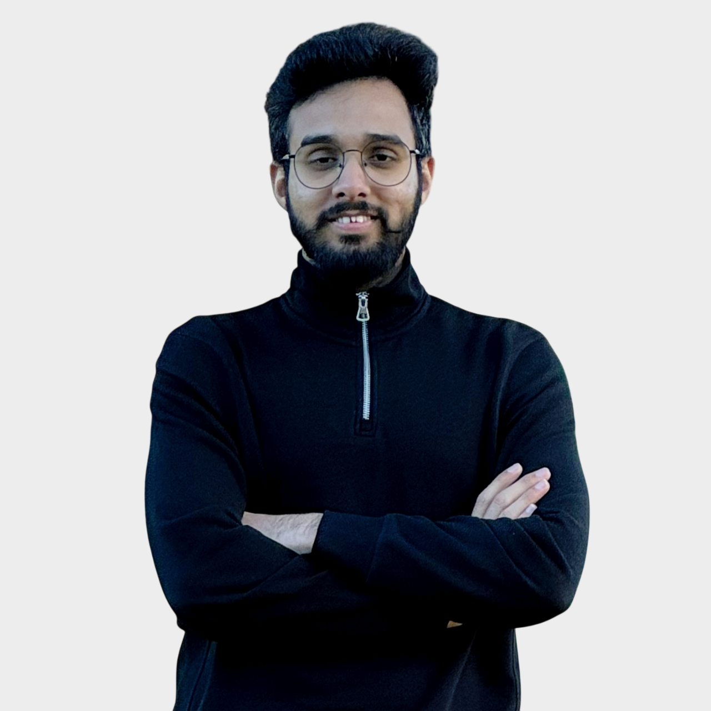
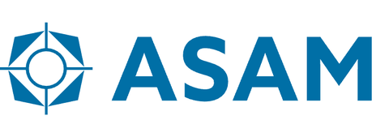
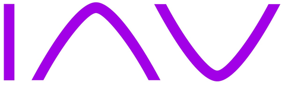
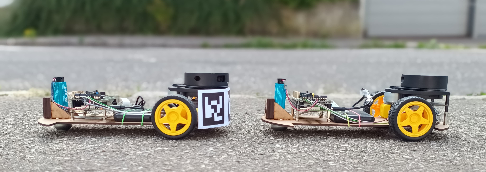
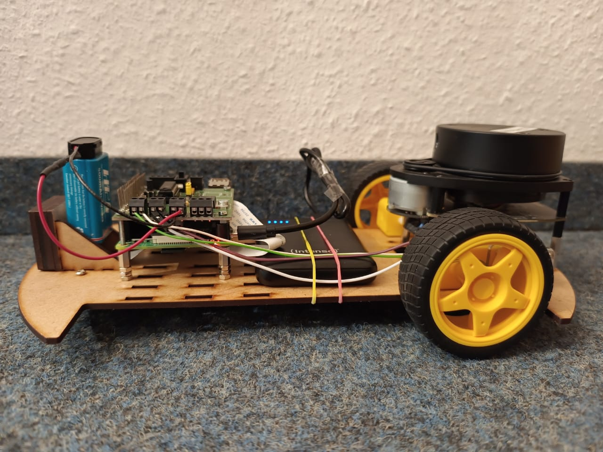
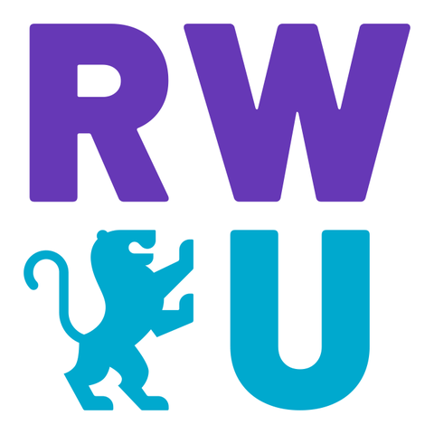

Flexible Soiling Detection for Automotive Cameras
Segmentation models that tell a clean camera from a blinded one — and trigger a cleaning system before the vehicle drives blind.

Perception & Robotics Engineer
I build perception systems that help machines see — fusing camera, radar and LiDAR data into decisions autonomous systems can act on.
About
I'm a Mechatronics engineer (M.Sc., Hochschule Ravensburg-Weingarten) specializing in perception for autonomous systems — training segmentation and detection models in PyTorch, fusing camera, radar and LiDAR data, and getting the result running in real time with ONNX and TensorRT. My master's thesis at IAV GmbH took automotive camera soiling detection from an open research question to a deployed model. I'm currently a research collaborator at ASAM e.V., working on sensor-impairment simulation for ADAS, and looking for a full-time role in drone perception or SLAM.
Experience

ASAM e.V. · Kempten, Germany (Remote)
Building a sensor-impairment framework for ASAM ADSim, starting with rain-drop impairment on camera models — work aimed at FAST-Zero 2027 and the ASAM International Conference.

IAV GmbH · Chemnitz, Germany
Flexible Soiling Detection for Automotive Cameras. Built MudGAN to synthesize mud and soiling data, and collected and annotated a real-vehicle dataset. Benchmarked DeepLabV3+, SegFormer and PIDNet in PyTorch — best model reached 0.89 IoU / 0.94 Dice, false-positive rate down to 0.17%, deployed via ONNX at 7ms per frame (7.7M params). The water-spray and air-pressure cleaning prototype built alongside it went on to secure follow-on projects in defense and agriculture.
IAV GmbH · Chemnitz, Germany
Built a procedural raindrop-simulation tool to augment clean camera images with virtual soiling for camera-blindness detection — the foundation the master's thesis was built on.
Adani Group · Kutch Copper Limited, Mundra, India
Managed erection of 18,000 MT of structural steel on a greenfield copper smelter, ran SAP MM procurement and contractor billing up to ₹1 crore, and built the Excel / Power BI dashboards used for VP-level progress reporting.
Projects
Segmentation models that tell a clean camera from a blinded one — and trigger a cleaning system before the vehicle drives blind.

A low-cost robot that tracks and follows a lead vehicle using ArUco markers and a Kalman filter for smooth, noise-resistant tracking — no LiDAR required.
View on GitHub ↗
Four autonomous-driving tasks on one Raspberry Pi rig: camera line following, LiDAR-based obstacle stopping, colour-cube approach and ArUco-marker response.
View on GitHub ↗Marker-based AR overlays alongside monocular object detection with depth estimation — two short computer-vision studies in one repo.
View on GitHub ↗Also on GitHub: MedVisionAI — computer-vision models for medical imaging. See all repositories ↗
Skills
Education

Hochschule Ravensburg-Weingarten (RWU)
Sept 2023 — Jan 2026
The Maharaja Sayajirao University of Baroda
Jul 2018 — May 2022
Contact
I'm looking for full-time perception, robotics or SLAM roles in Germany and the EU. Based in Chemnitz — open to relocating.